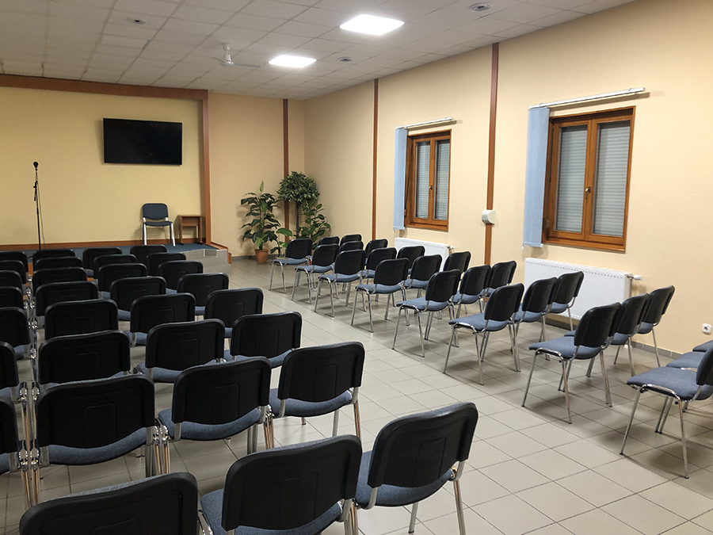

Színek
Kérjük vegyétek figyelembe, hogy az általatok látható színek a valóságtól valamennyire eltérhetnek a kijelzők, vagy monitorok színhűségétől függően. Ezt főként laptopok használata esetén tapasztalhatjátok, ezért javasoljuk, hogy tekintsétek meg a képeket más eszközön is - pl. okostelefonon, vagy tableten.
Az iPhone és iPad készülékek helyesen adják vissza az alábbi színeket.
A színminták a királyságteremben, az ottani fényviszonyokkal lettek fotózva, ezáltal megfelelő minőségű kijelzőn nézve a valós megjelenést tükrözik.
1-es színcsomag
"balkáni gerle" Héra Prémium

"hamuszürke" Héra Prémium

2-es színcsomag
"gris rangoon" SE2070 Trilak

"brun cantal" SE2072 Trilak

3-as színcsomag
"beige glaise" SE2065 Trilak

"beige liais" SE2068 Trilak

4-es színcsomag
"gris fléche" SE2105 Trilak

"gris alger" SE2108 Trilak

Tervezet
A KFB javaslata, hogy a jelenlegi elrendezés szerint, az oldalfalak világosabbak legyenek, a színpad háttere pedig sötétebb. Ezért vannak párosával összeválogatva az ajánlott színek.
Előnézet
Az alábbi képeken láthatjátok a fenti színösszeállításokat az egyik terem falára vetítve.
Javasoljuk, hogy az északi terem legyen világosabb, mert fekvése miatt kevesebb fényt kap. A déli termet pedig célszerű sötétebb színekkel festeni, mert túl sok fényt kap.
Ez a jelenlegi szín:
1-es színcsomag az északi teremnek:

2-es színcsomag a déli teremnek:

3-as színcsomag az északi teremnek:

4-es színcsomag a déli teremnek: